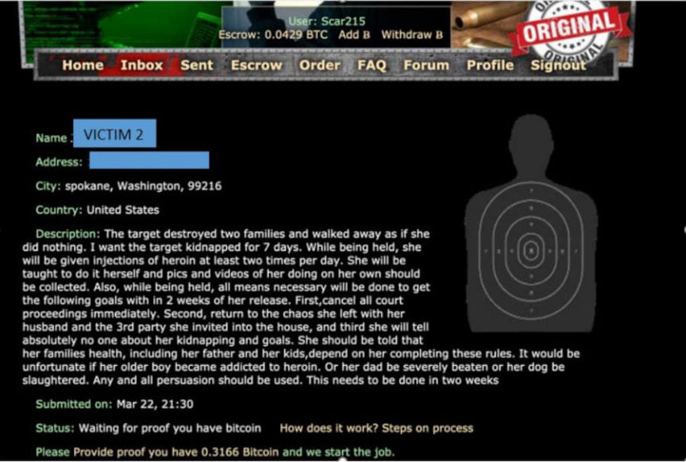
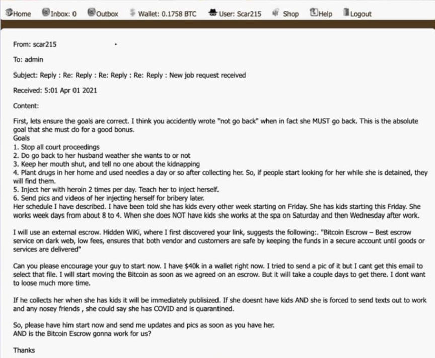
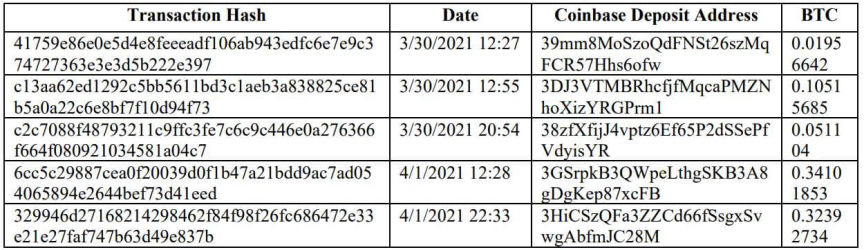
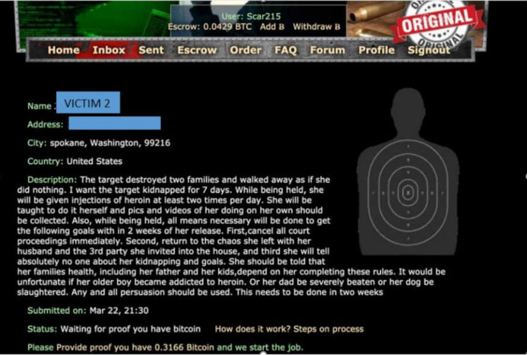
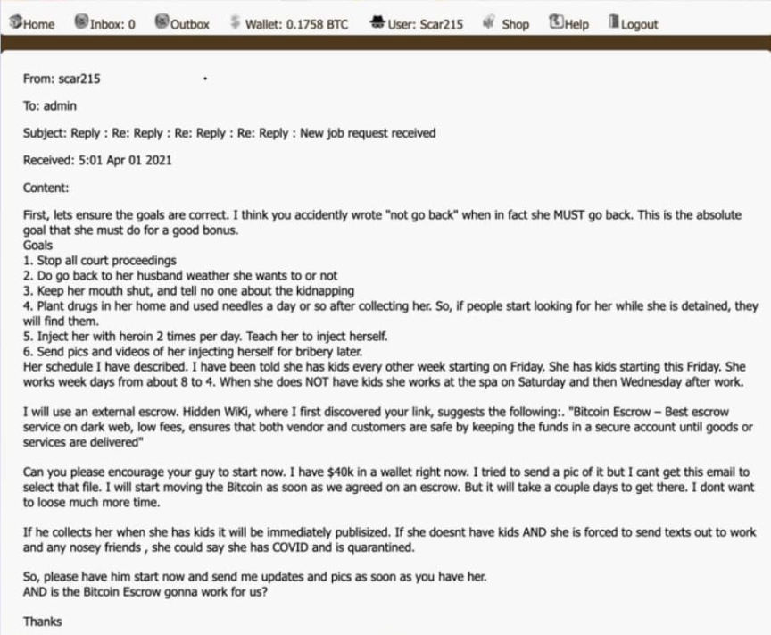
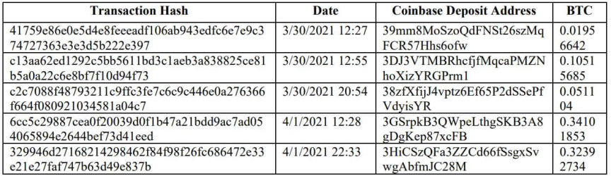

Washington Doctor Pleads Guilty in Murder-for-Hire Case
~3 min read | Published on 2022-08-11, tagged Murder-for-Hire, Pleaded-Guilty using 632 words.
The Spokane, Washington, doctor accused of hiring a hitman to injure his wife pleaded guilty in federal court.
Dr. Ronald Ilg, a neonatal specialist in Washington, tried to hire hitmen on the darkweb to kidnap and injure his estranged wife and a former coworker.
“Your honor, I was a broken man,” Ilg said in court Wednesday. “I was broken and I contacted different websites on the dark web to not only injure one of my partners, but also kidnap my wife.”
According to court documents, Ilg found a murder-for-hire site on the darkweb and asked for someone to beat and injure a former coworker. The coworker complained about Ilg at a medical practice in Washington, resulting in Ilg losing his job.

Using the handle “scar215,” Ilg sent a request to the first murder-for-hire site:
“The target should be given a significant beating that is obvious. It should injure both hands significantly or break the hands. I tried to attach a pic but it wouldn’t load.”

Later, in a conversation with the operator of another murder-for-hire site, Scar215 spelled out an elaborate plan to stop his wife’s divorce from proceeding.
Many of the messages are available in the previous Darknetlive article about the case. One of the first messages sent to the second murder-for-hire site is as follows:
“I need a rush job for next week. I need the target kidnapped for five to seven days. While being held she is given at least daily doses of heroin. She is also strongly persuaded to do a few things within two weeks.”
[list=1]*stop ALL Court proceedings;*return to your husband and the chaos you created;*tell absolutely no one about this;*the team should plant heroin and used needles with her DNA inside. After about seven days, she is returned to her home.[/list]
“The target destroyed two families and walked away as if she did nothing. I want the target kidnapped for 7 days. While being held, she will be given injections of heroin at least two times per day. She will be taught to do it herself, and pics and videos of her doing on her own should be collected. Also, while being held, all means necessary will be done to get the following goals with in 2 weeks of her release.”
“First, cancel all court proceedings immediately. Second, return to the chaos she left with her husband and the 3rd party she invited into the house, and third, she will tell absolutely no one about her kidnapping and goals. She should be told that her families health, including her father and her kids, depend on her completing these rules. It would be unfortunate if her older boy became addicted to heroin. Or her dad be severely beaten or her dog be slaughtered. Any and all persuasion should be used. This needs to be done in two weeks.”
In April 2020, BBC journalists forwarded copies of Ilg’s messages to the Federal Bureau of Investigation. Some messages included the Bitcoin transaction hash of Ilg’s payments to escrow sites. FBI investigators learned that the payments came from a Coinbase wallet. Records from Coinbase linked Ilg to the transactions and account.

After initially pleading not guilty to the charges, Ilg agreed with the prosecution. Ilg would plead guilty to two counts of making threats using interstate commerce in exchange for a sentence of between five and eight years in prison. In court, the judge said he “agreed with the government that a fair and just sentencing would be between five years and eight years [in prison].”
The judge also scheduled Ilg’s sentencing hearing for November 8, 2022. Ilg will remain in jail while waiting to be sentenced.
Interesting picture of Ilg on this site where he does not look crazy.
Dr. Ronald Ilg, a neonatal specialist in Washington, tried to hire hitmen on the darkweb to kidnap and injure his estranged wife and a former coworker.
“Your honor, I was a broken man,” Ilg said in court Wednesday. “I was broken and I contacted different websites on the dark web to not only injure one of my partners, but also kidnap my wife.”
Dr. Ronald Ilg
According to court documents, Ilg found a murder-for-hire site on the darkweb and asked for someone to beat and injure a former coworker. The coworker complained about Ilg at a medical practice in Washington, resulting in Ilg losing his job.

A Screenshot of DARK WEBSITE #1 | FBI
Using the handle “scar215,” Ilg sent a request to the first murder-for-hire site:
“The target should be given a significant beating that is obvious. It should injure both hands significantly or break the hands. I tried to attach a pic but it wouldn’t load.”

A Screenshot of DARK WEBSITE #2 | FBI
Later, in a conversation with the operator of another murder-for-hire site, Scar215 spelled out an elaborate plan to stop his wife’s divorce from proceeding.
Many of the messages are available in the previous Darknetlive article about the case. One of the first messages sent to the second murder-for-hire site is as follows:
“I need a rush job for next week. I need the target kidnapped for five to seven days. While being held she is given at least daily doses of heroin. She is also strongly persuaded to do a few things within two weeks.”
[list=1]*stop ALL Court proceedings;*return to your husband and the chaos you created;*tell absolutely no one about this;*the team should plant heroin and used needles with her DNA inside. After about seven days, she is returned to her home.[/list]
“The target destroyed two families and walked away as if she did nothing. I want the target kidnapped for 7 days. While being held, she will be given injections of heroin at least two times per day. She will be taught to do it herself, and pics and videos of her doing on her own should be collected. Also, while being held, all means necessary will be done to get the following goals with in 2 weeks of her release.”
“First, cancel all court proceedings immediately. Second, return to the chaos she left with her husband and the 3rd party she invited into the house, and third, she will tell absolutely no one about her kidnapping and goals. She should be told that her families health, including her father and her kids, depend on her completing these rules. It would be unfortunate if her older boy became addicted to heroin. Or her dad be severely beaten or her dog be slaughtered. Any and all persuasion should be used. This needs to be done in two weeks.”
In April 2020, BBC journalists forwarded copies of Ilg’s messages to the Federal Bureau of Investigation. Some messages included the Bitcoin transaction hash of Ilg’s payments to escrow sites. FBI investigators learned that the payments came from a Coinbase wallet. Records from Coinbase linked Ilg to the transactions and account.

The transactions referenced by Dr. Ilg originated from Coinbase.
After initially pleading not guilty to the charges, Ilg agreed with the prosecution. Ilg would plead guilty to two counts of making threats using interstate commerce in exchange for a sentence of between five and eight years in prison. In court, the judge said he “agreed with the government that a fair and just sentencing would be between five years and eight years [in prison].”
The judge also scheduled Ilg’s sentencing hearing for November 8, 2022. Ilg will remain in jail while waiting to be sentenced.
Interesting picture of Ilg on this site where he does not look crazy.